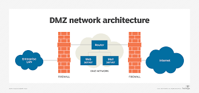

Datavirus
Datavirus er eit samlebegrep for uønska program som på ein eller annan måte gjer skade på data
eller tek over kontrollen over datamaskina.
Forskjellige typar datavirus er f.eks.
Ormar, det er ein programkode som gjer at viruset sperier seg sjølv utover pc-en din.
Trojansk hest, som er illustrert på bilde over, er når viruset skjuler seg inni eit anna program
og blir spreidd utover pc-en når nokon lastar ned eller kopierer hovudprogrammet.
Du har dei harmlause virusene som spreiar seg på pc-en utan og gjera skade.
Du har også dei skadlege virusene som kan f.eks sletta eller kopiera sensetiv data, og ta kontroll over pc-en.
Antivirus
Antivurs hjelper deg og advarer deg mot farlige nettstader eller programmer.
Antivirus oppdager visst du har fått virus på pc-en og fjerner dei før dei får gjort skade.
Ikkje opne mail som du ikkje veit kem er i frå, det er eit perfekt eksempel på ein Trojansk hest
Nokre typar antivirus program er Avira,mcAfee, F-Secure, Avg og Avast. Avg og Avast er gratis.

DMZ
DMZ eller demitarisert sone er ein del av nettverket til ei verksemd som ein brukar utanfor kan få tilgang til.
Hensikta med dette er å sørga fpr at hackaren ikkje skal få tilgang til heile bedriftas nettverket,
dersom han greier å bryta seg inn.
Tilbake til Hovudsida